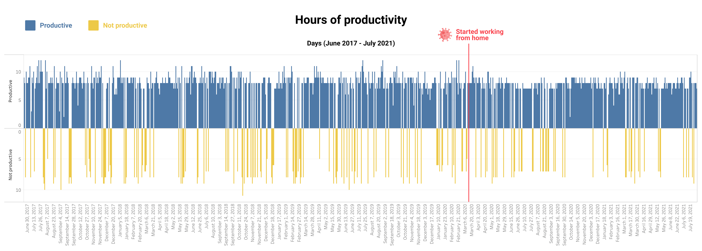

How COVID affected my productivity
12 August 2021
TL;DR I work fewer hours but I feel more productive.
- Context: I live in Melbourne, Australia.
- We have had strict lockdowns for many months.
- We have had multiple lockdowns and are currently in our 6th lockdown.
- During this time I have worked exclusively from home (except for 2 days in between lockdowns).
I work less now. After the transition to full time remote work, there was a noticeable decrease in my working hours.
Despite the fact we have a fantastic work culture where I work I'm sure the natural social pressure of leaving the office first is a factor here. At home, none of my colleagues can see when I decide to stop working.
A noticeable insight in the above chart is the tops have been cut off. I'm working fewer 10, 11 and 12 hour days. An anecdotal factor here would be that when I was in the office, I felt most productive when everyone had left the office. I would hit my stride from 6pm onwards. Now that I'm working from home, this isn't a factor.
I have felt more productive since working from home. I worked fewer hours overall, but I had stronger runs of productivity. When COVID started, you can see that I went through a trough of unproductivity. However from October 2020 onwards I've had noticeable chunks of productivity.
Another factor here would be my old daily commute. I used to drive into the office every day and battle rush hour traffic for 45 mins each way. That took a toll on my energy. Now that I work from home, it's simply not a factor.
Huge thanks to my big bro for helping me out with data stuff. Tableau is awesome!
How have you felt during COVID? Have you moved to remote work? Did you feel like you've gained or lost productivity?